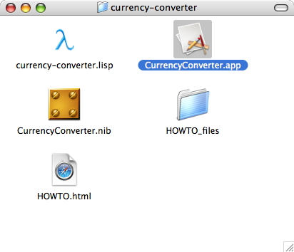
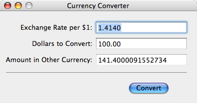

Both the user interface and the behavior of the
CurrencyConverter are complete now. All that remains for us to
do is to build the application executable into a Cocoa
application bundle. Apple's tutorial relies on XCode to build
the application from Objective-C source files; we will use the
Clozure CL IDE to build it from our Lisp source file.
We build the application using the optional
BUILD-APPLICATION feature, distributed as part of Clozure CL. The
steps to build the Cocoa application are:
Load the application code into the IDE
Load the BUILD_APPLICATION feature
Run BUILD_APPLICATION with the proper arguments
This sequence of steps causes Clozure CL to construct a Cocoa
application bundle and write out the application executable to
it, then quit. If all goes well, you should be able to run the
application by double-clicking it, and use the UI you built in
InterfaceBuilder to convert currencies.
Launch the Clozure CL IDE. It's safest to build the
application with a fresh IDE session, so if you have it
running, you may wish to quit and relaunch before following
the rest of the steps.
For convenience, set the working directory to your
"currency-converter" folder. For example, you can do
something like this (using your pathnames in place of mine, of
course:):
(setf (current-directory) "/Users/mikel/Valise/clozure/openmcl/example-code/currency-converter/")
Load the application code:
(load "currency-converter")
Load the BUILD-APPLICATION feature:
(require "build-application")
Run BUILD-APPLICATION (be sure to correct the pathname
to your CurrencyConverter nibfile. It is safest to use a full,
absolute pathname—not the relative pathname you see
below):
(ccl::build-application :name "CurrencyConverter"
:main-nib-name "CurrencyConverter"
:nibfiles
'(#P"currency-converter/CurrencyConverter.nib"))
By default, BUILD-APPLICATION constructs the application
bundle in the current working directory. If you followed the
instructions here, that means it will build
CurrencyConverter.app in your currency-converter folder. You
can control where BUILD-APPLICATION puts the application bundle
by passing a pathname as the value of the keyword argument
:DIRECTORY, like so:
(ccl::build-application :name "CurrencyConverter"
:directory #P"/Users/mikel/Desktop/"
:main-nib-name "CurrencyConverter"
:nibfiles
'(#P"currency-converter/CurrencyConverter.nib"))
If all goes well, BUILD-APPLICATION constructs an
application bundle, copies "CurrencyConverter.nib" into it,
writes the application executable, and quits. You should now
be able to launch CurrencyConverter.app by double-clicking
the application icon:

CurrencyConverter.app launches and displays your user
interface, which you can then use to convert currencies:

You'll notice when you run the application that, even though
you named it CurrencyConverter, the name in the main menu
appears as "Clozure CL". That's because OS X takes the
application's name, not from the application bundle's name, nor
from the running code, but from an InfoPlist.strings file hidden
inside the application bundle. To make the name appear
correctly in the running application, you need to edit the file
CurrencyConverter.app/Contents/Resources/English.lproj/InfoPlist.strings
Find the entry named "CFBundleName" and change its value
from "Clozure CL" to "CurrencyConverter". The application's name
in the main menu bar should now appear correctly, as
"CurrencyConverter". You may also want to change the other
strings in the "InfoPlist.strings" file.